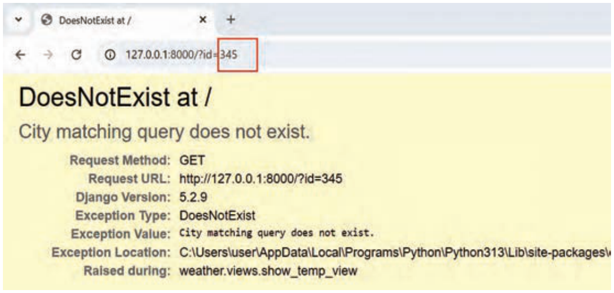
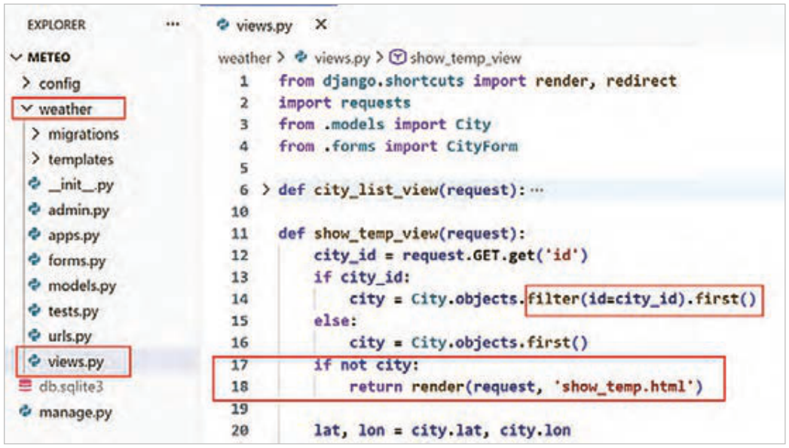
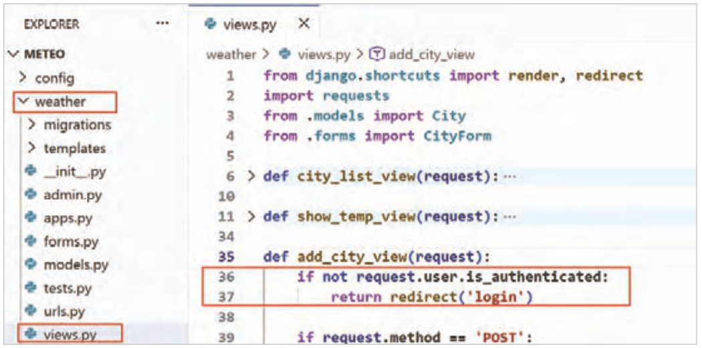

اگر کاربر id شهر را در نوار آدرس مرورگر، دستی تغییر دهد و id وارد شده در پایگاهداده وجود نداشته باشد، در صفحه اصلی سایت خطایی همانند شکل 76 نمایش داده میشود.

شکل ۷۶: خطا در صورت اشتباه بودن آیدی شهر
راهحل باگ اول و دوم: برای رفع این ایراد، کد show_temp_view را همانند شکل 77 تغییر دهید.

شکل ۷۷: رفع ایراد کد
صفحه ۳۲۷
توضیحات کدها:
خط 14: بهجای استفاده از تابع get از تابع filter و first استفاده شده است. تابع get در صورتی خطا میدهد که مقدار موردنظر در دیتابیس وجود نداشته باشد. اما تابع filter این رفتار را ندارد و باعث بروز خطا نخواهد شد. پس باگ دوم را پوشش میدهد.
خط 17: درصورتیکه city مقدار نداشته باشد، درخواست به API آبوهوا ارسال نمیشود و مستقیماً show_temp.html نمایش داده میشود. این خط نیز باگ اول را پوشش میدهد، قبل از اصلاح کدها اگر هیچ شهری در دیتابیس وجود نداشت، مقدار city برابر None میشد. پس هنگام دریافت lat کد به خطا میخورد. با تغییراتی که اعمال شد، این باگ برطرف شده است.
باگ امنیتی
اگر کاربر عضو سایت نباشد، اما آدرس صفحه افزودن شهر و حذف شهرها را داشته باشد، بدون login در سایت میتواند، شهر اضافه کرده و یا شهر حذف نماید.
راهحل باگ امنیتی: برای رفع این ایراد، کد add_city_view را همانند شکل 78 تغییر دهید.

شکل ۷۸: رفع باگ امنیتی کد
توضیحات کدها:
خط 36: درصورتیکه کاربر login نکرده باشد، در خط بعدی به صفحه login منتقل خواهد شد. همین کد را میتوانید برای delete_city_view هم استفاده کنید.
با این تغییرات، اگر کاربر login نباشد؛ ولی آدرس افزودن شهر و حذف شهر را در مرورگر وارد کند، به صفحه login منتقل خواهد شد.
صفحه ۳۲۸
ارزشیابی شایستگی توسعه وب اپلیکیشن
استاندارد عملکرد کار: هنرجو بتواند با ساخت Model در جنگو و استفاده از فرمهای HTML ارتباط با پایگاه داده را پیادهسازی کند و اطلاعاتی که کاربران وارد میکنند را در جداول ذخیره و بازیابی نماید.
Page 326
Coding bug two
If the user changes the id of the city by hand in the browser's address bar and the id entered does not exist in the database, an error as in Figure 76 is shown on the main page of the site.
Figure 76: The error when the city id is wrong
The solution to the first and second bug: to fix this flaw, change the code of show_temp_view as in Figure 77.
Figure 77: Fixing the flaw in the code
Page 327
Explanation of the code:
Line 14: instead of the function get, the functions filter and first are used. The function get gives an error if the wanted value does not exist in the database. But the function filter does not have this behaviour and will not cause an error. So it covers the second bug.
Line 17: if city has no value, the request is not sent to the weather API and show_temp.html is shown directly. This line also covers the first bug; before fixing the code, if there was no city in the database, the value of city would become None. So when getting lat the code would fail. With the changes made, this bug is fixed.
A security bug
If the user is not a member of the site but has the address of the page for adding and deleting cities, they can add a city or delete a city without logging in to the site.
The solution to the security bug: to fix this flaw, change the code of add_city_view as in Figure 78.
Figure 78: Fixing the security bug of the code
Explanation of the code:
Line 36: if the user has not logged in, in the next line they will be taken to the login page. You can use the same code for delete_city_view too.
With these changes, if the user is not logged in but enters the address of adding a city and deleting a city in the browser, they will be taken to the login page.
Page 328
Competency assessment: developing a web application
Work performance standard: the student can, by making a Model in Django and using HTML forms, implement the connection with the database and store and retrieve the information users enter in tables.